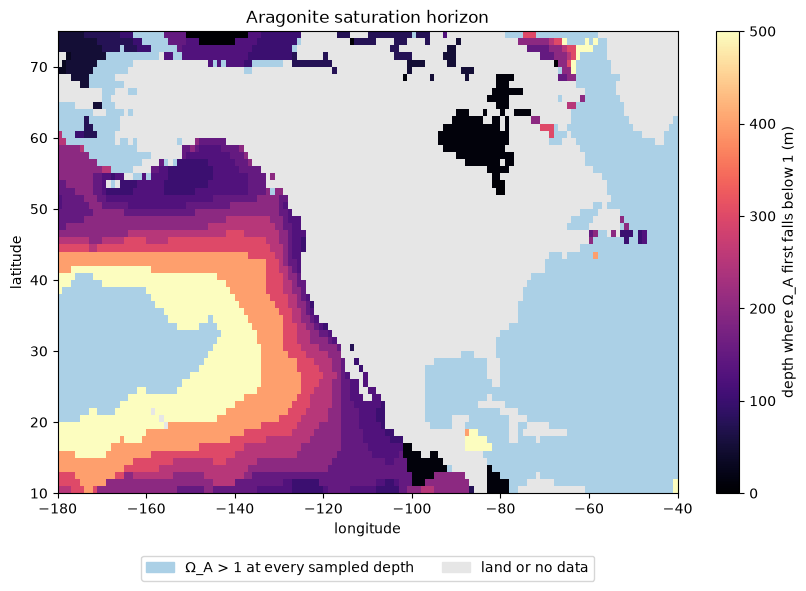

%pip install -q "icechunk>=2.3" "xarray>=2026.7" "zarr>=3.4" matplotlibNCEI OA indicators: the aragonite saturation horizon

A textbook ocean acidification picture from NCEI’s climatology of ocean acidification indicators on the North American margins (1° grid, surface to 500 m, observations 2003–2018 adjusted to 2010), as a virtual Icechunk store. No credentials needed. Runs on Google Colab (Python 3.12).
The textbook idea
The ocean takes up about a quarter of the CO₂ that people emit. Dissolved CO₂ forms carbonic acid, which lowers pH and uses up carbonate ions (CO₃²⁻), the building block that corals, pteropods, oysters and other animals use to make shells of calcium carbonate.
The aragonite saturation state, ΩA, measures how easy that is:
\[\Omega_A = \frac{[\mathrm{Ca^{2+}}]\,[\mathrm{CO_3^{2-}}]}{K'_{sp}}\]
- ΩA > 1: seawater is supersaturated, and aragonite shells can form and persist.
- ΩA < 1: seawater is corrosive, and unprotected aragonite dissolves.
ΩA falls with depth. Deep water is cold and under pressure, both of which make aragonite more soluble, and it holds CO₂ released by the decay of sinking organic matter. The depth where ΩA = 1 is the aragonite saturation horizon. Two things set how deep it is:
- Ocean basin. North Pacific deep water is old and has collected respired CO₂ for centuries, so its horizon is far shallower than the North Atlantic’s.
- Upwelling. Along the US West Coast, spring and summer winds bring that corrosive water up onto the continental shelf (Feely et al. 2008). It was behind the oyster-hatchery failures in the Pacific Northwest (Barton et al. 2012), and every bit of anthropogenic CO₂ raises the horizon further.
Why the store helps
NCEI ships this product as one NetCDF file per indicator, and the files’ latitude, longitude and depth axes are placeholder zeros, so you cannot select a place or draw a map without rebuilding the grid by hand. The store puts all 12 indicators on one real (depth, lat, lon) grid.
import icechunk, xarray as xr
import matplotlib.pyplot as plt
from matplotlib.patches import Patch
url = "https://data.source.coop/ocean-icechunks/oa-indicators/climatology"
repo = icechunk.Repository.open(icechunk.http_storage(url))
# Authorize anonymous reads of NCEI's files, where the data actually live.
auth = {p: icechunk.credentials.HttpAccess for p in repo.config.virtual_chunk_containers}
repo = repo.reopen(authorize_virtual_chunk_access=auth)
ds = xr.open_zarr(repo.readonly_session("main").store, consolidated=False, chunks=None)
ds<xarray.Dataset> Size: 86MB
Dimensions: (depth: 14, lat: 76, lon: 141)
Coordinates:
* depth (depth) float64 112B 0.0 10.0 20.0 30.0 ... 300.0 400.0 500.0
* lat (lat) float64 608B 10.5 11.5 12.5 13.5 ... 82.5 83.5 84.5 85.5
* lon (lon) float64 1kB -179.5 -178.5 -177.5 ... -41.5 -40.5 -39.5
Data variables: (12/72)
CO3_SE (depth, lat, lon) float64 1MB ...
CO3_an (depth, lat, lon) float64 1MB ...
CO3_mn (depth, lat, lon) float64 1MB ...
DIC_gp (depth, lat, lon) float64 1MB ...
DIC_an (depth, lat, lon) float64 1MB ...
Hfree_SE (depth, lat, lon) float64 1MB ...
... ...
pHT_dd (depth, lat, lon) float64 1MB ...
pHT_mn (depth, lat, lon) float64 1MB ...
pHT_sd (depth, lat, lon) float64 1MB ...
pHT_an (depth, lat, lon) float64 1MB ...
fCO2_an (depth, lat, lon) float64 1MB ...
pHT_gp (depth, lat, lon) float64 1MB ...
Attributes: (12/33)
Conventions: CF-1.12, ACDD-1.3
title: Climatological distribution of ocean acidi...
summary: 1x1 degree coastal climatologies of twelve...
keywords: ocean acidification, pH, aragonite saturat...
source: NCEI Accession 0270962: twelve NetCDF-4 fi...
history: 2026-09-17T22:18:58+00:00: merged the twel...
... ...
geospatial_lon_units: degrees_east
geospatial_vertical_units: m
geospatial_vertical_positive: down
time_coverage_start: 2003-12-06
time_coverage_end: 2018-11-22
comment: A climatology: there is no time dimension....Map the saturation horizon
OmegaA_an is the analysed aragonite saturation state, 1.2 MB for the whole 3-D field. For each grid cell, find the shallowest depth where it drops below 1.
omega = ds.OmegaA_an.load()
corrosive = omega < 1
horizon = corrosive.idxmax("depth").where(corrosive.any("depth")) # first depth with Ω < 1
not_reached = omega.notnull().any("depth") & ~corrosive.any("depth")
fig, ax = plt.subplots(figsize=(10, 6))
ax.set_facecolor("0.9") # land, and cells with no data
not_reached.where(not_reached).plot(ax=ax, cmap="Blues", vmin=0, vmax=3, add_colorbar=False)
horizon.plot(ax=ax, cmap="magma", vmin=0, vmax=500,
cbar_kwargs={"label": "depth where Ω_A first falls below 1 (m)"})
ax.legend(handles=[Patch(color=plt.cm.Blues(1 / 3), label="Ω_A > 1 at every sampled depth"),
Patch(color="0.9", label="land or no data")],
loc="upper center", bbox_to_anchor=(0.5, -0.12), ncols=2)
ax.set(title="Aragonite saturation horizon", xlabel="longitude", ylabel="latitude",
xlim=(-180, -40), ylim=(10, 75))
plt.show()
- Pacific coast, Mexico to Alaska: corrosive water sits only 100–150 m down, on or just off the shelf. Offshore, in the subtropical gyre, the horizon deepens to 400 m and below 500 m.
- Atlantic, Gulf of Mexico, Caribbean: ΩA stays above 1 at every depth sampled, down to 500 m.
- Two shallow spots: off southern Mexico and Central America, where an oxygen-poor, CO₂-rich layer lies close under the surface, and Hudson Bay, whose river-fed water is low in carbonate; in both, ΩA is below 1 within 10–50 m of the surface.
Two profiles
Oregon’s shelf edge against the open Gulf of Mexico. Both start supersaturated at the surface; only one crosses ΩA = 1.
fig, ax = plt.subplots(figsize=(5, 5))
for name, lat, lon in [("Oregon", 44.5, -125.5), ("Gulf of Mexico", 26.5, -90.5)]:
p = omega.sel(lat=lat, lon=lon, method="nearest")
ax.plot(p, p.depth, "o-", label=name)
ax.axvline(1, color="k", ls="--", lw=1)
ax.text(0.95, 30, "corrosive\nΩ_A < 1", ha="right", va="top")
ax.set(ylim=(500, 0), xlabel="Ω_A (aragonite saturation state)", ylabel="depth (m)")
ax.legend()
plt.show()
Caveats. This is a climatology: observations from 2003–2018, adjusted to the year 2010 and gridded at 1°, so it smooths seasons and upwelling events, and the horizon is only as fine as the depth levels (100, 125, 150 m …). OmegaA_dd gives the number of observations behind each cell, useful for judging where the map is well constrained.
More: the store’s README lists all 72 variables (pH, DIC, alkalinity, pCO₂, Revelle factor, …) and how to cite the data.